vignettes/smartid_Demo.Rmd
smartid_Demo.Rmdsmartid
smartid is a package that enables automated selection of
group specific signature genes, especially for rare population. This
package is developed for generating lists of specific signature genes
based on Term Frequency-Inverse Document Frequency
(TF-IDF) modified methods and expectation maximization
(EM) for labeled data. It can also be used as a new gene-set scoring
method or data transformation method for un-labeled data. Multiple
visualization functions are implemented in this package.
smartid R package can be installed from Bioconductor or
GitHub.
The most updated version of smartid is hosted on GitHub
and can be installed using devtools::install_github()
function provided by devtools.
if (!requireNamespace("BiocManager", quietly = TRUE)) {
install.packages("BiocManager")
}
if (!requireNamespace("smartid", quietly = TRUE)) {
BiocManager::install("smartid")
}To show a quick start guide of smartid, here we use
package splatter
to simulate a scRNA-seq data of 1000 genes * 3000 cells. This data
consists of 4 groups, each has 2% DEGs except Group 4, which has no DEG
as a negative control group.
library(smartid)
library(SummarizedExperiment)
library(splatter)
library(ggplot2)
library(scater)
## set seed for reproducibility
set.seed(123)
sim_params <- newSplatParams(
nGenes = 1000,
batchCells = 3000,
group.prob = seq(0.1, 0.4, length.out = 4),
de.prob = c(0.02, 0.02, 0.02, 0),
# de.downProb = 0,
de.facLoc = 0.5,
de.facScale = 0.4
)
data_sim <- splatSimulate(sim_params, method = "groups")
## get up markers based on fold change
fc <- 1
cols <- paste0("DEFacGroup", seq_along(unique(data_sim$Group)))
defac <- as.data.frame(rowData(data_sim)[, cols])
up <- lapply(cols, \(id)
dplyr::filter(defac, if_all(-!!sym(id), \(x) !!sym(id) / x > fc)) |>
rownames())
slot(data_sim, "metadata")$up_markers <- setNames(up, cols)
slot(data_sim, "metadata")$up_markers
#> $DEFacGroup1
#> [1] "Gene31" "Gene42" "Gene172" "Gene225" "Gene308" "Gene312" "Gene352"
#> [8] "Gene391" "Gene425" "Gene436" "Gene547" "Gene650" "Gene696" "Gene893"
#> [15] "Gene904" "Gene913"
#>
#> $DEFacGroup2
#> [1] "Gene37" "Gene76" "Gene141" "Gene332" "Gene419" "Gene628" "Gene682"
#> [8] "Gene713" "Gene778" "Gene818"
#>
#> $DEFacGroup3
#> [1] "Gene26" "Gene28" "Gene357" "Gene405" "Gene462" "Gene518" "Gene833"
#>
#> $DEFacGroup4
#> character(0)
data_sim
#> class: SingleCellExperiment
#> dim: 1000 3000
#> metadata(2): Params up_markers
#> assays(6): BatchCellMeans BaseCellMeans ... TrueCounts counts
#> rownames(1000): Gene1 Gene2 ... Gene999 Gene1000
#> rowData names(8): Gene BaseGeneMean ... DEFacGroup3 DEFacGroup4
#> colnames(3000): Cell1 Cell2 ... Cell2999 Cell3000
#> colData names(4): Cell Batch Group ExpLibSize
#> reducedDimNames(0):
#> mainExpName: NULL
#> altExpNames(0):smartid can be easily used to accurately identify
specific marker genes on labeled data. By adapting and modifying TF-IDF
approach, smartid shows robust power in finding marker
genes, especially for rare population which many methods fail in.
marker identification of smartid includes 3 key
steps:
step 1. score samples
step 2. scale and transform scores
step 3. identify markers using expectation maximization (EM)
The first step is to score all samples/cells by using specified
approach. The score can be composed of 3 terms: TF (term/feature
frequency), IDF (inverse document/cell frequency) and IAE (inverse
average expression of features). Each term has a couple of available
choices with different formats to suit labeled or un-labeled data. Users
can use function idf_iae_methods() to see available methods
for IDF/IAE term. More details of each term can be seen in help page of
each function, e.g. ?idf.
## show available methods
idf_iae_methods()
#> unlabel HDBSCAN label IGM unlabel max
#> "hdb" "igm" "m"
#> null label probability label relative frequency
#> "null" "prob" "rf"
#> unlabel SD unlabel standard
#> "sd" "standard"The basic version of TF, IDF and IAE can be termed as:
Where is the counts of feature in cell ; is ; is the total number of documents(cells); is .
Here for labeled data, we can choose logTF * IDF_prob * IAE_prob for marker identification:
The probability version of IDF can be termed as:
And the probability version of IAE can be termed as:
Where is the category of cell ; is the category other than .
TF here stands for gene frequency, which is similar to CPM, while IDF represents the inverse cell/sample frequency for scRNA-seq data, and IAE is the inverse average expression of each gene across all cells or cells in each labeled group.
Another advantage of smartid is that it can start with
raw counts data, with no need for pre-processed data. And the scoring is
quite fast.
Starting from smartid 1.7.3, cal_score() no longer
stores the intermediate tf, idf and
iae matrices in metadata() by default, because
on large inputs these objects can each match the full feature-by-cell
score matrix in size and quickly dominate memory. When the intermediates
are useful for inspection (as in this demo), pass
return.intermediate = TRUE to restore the pre-1.7.3
behaviour.
## compute score
system.time(
data_sim <- cal_score(
data_sim,
tf = "logtf",
idf = "prob",
iae = "prob",
par.idf = list(label = "Group"),
par.iae = list(label = "Group"),
return.intermediate = TRUE
)
)
#> user system elapsed
#> 0.177 0.001 0.178
## score in assays; tf, idf and iae are stored in metadata()
## because we opted in with return.intermediate = TRUE.
assays(data_sim)
#> List of length 7
#> names(7): BatchCellMeans BaseCellMeans BCV CellMeans TrueCounts counts score
names(metadata(data_sim))
#> [1] "Params" "up_markers" "tf" "idf" "iae"Scaling is needed to find the markers specific to the group, however,
standard scaling might fail due to the rare populations. Here
smartid uses a special scaling strategy
scale_mgm(), which can scale imbalanced data by given group
labels. By doing this, we can avoid the bias towards features with
larger numerical ranges during feature selection.
The scale method is depicted as below:
The score will be transformed using softmax before passing to EM algorithm.
top_m <- top_markers(
data = data_sim,
label = "Group",
n = Inf # set Inf to get all features processed score
)
top_m
#> # A tibble: 4,000 × 3
#> # Groups: .dot [4]
#> .dot Genes Scores
#> <chr> <chr> <dbl>
#> 1 Group1 Gene352 0.0216
#> 2 Group1 Gene696 0.0200
#> 3 Group1 Gene425 0.0171
#> 4 Group1 Gene391 0.0160
#> 5 Group1 Gene225 0.0159
#> 6 Group1 Gene893 0.0147
#> 7 Group1 Gene913 0.0113
#> 8 Group1 Gene650 0.0107
#> 9 Group1 Gene172 0.00998
#> 10 Group1 Gene547 0.00980
#> # ℹ 3,990 more rowsThe top n features for each group will be ordered and listed in
top_m. smartid provides easy-to-use functions
to visualize top feature scores in each group and compare with actual
up-regulated DEGs.
It’s clear that the real UP DEGs are popping up to the top n features. And for the negative control “Group 4”, the shape of top feature score is totally different from the ones with DEGs, which can provide more insights to help understand the data.
score_barplot(
top_markers = top_m,
column = ".dot",
f_list = slot(data_sim, "metadata")$up_markers,
n = 20
)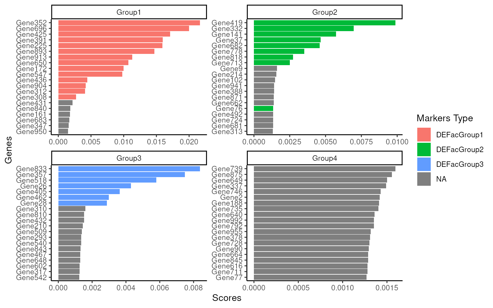
As we can see, there is an UP DEG ‘Gene76’ not popping up in Group 2, we can check the relative expression of this gene using violin plot. It is clear that this gene is not significantly highly expressed in Group 2 and the average expression is quite low across all cells.
This can also be confirmed in data simulation information, where the
scale factor is higher in Group2, but the GeneMean is too small to be
confident. Thus this gene won’t be selected by smartid.
sin_score_boxplot(
metadata(data_sim)$tf,
features = "Gene76",
ref.group = "Group2",
label = data_sim$Group
)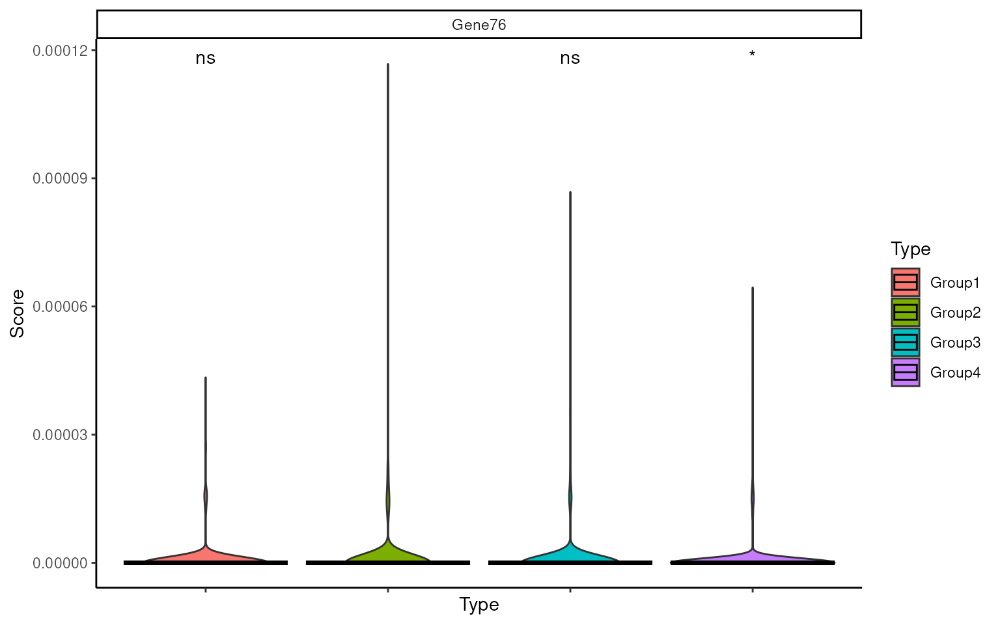
## sim gene info
SummarizedExperiment::elementMetadata(data_sim)[76, ]
#> DataFrame with 1 row and 8 columns
#> Gene BaseGeneMean OutlierFactor GeneMean DEFacGroup1 DEFacGroup2
#> <character> <numeric> <numeric> <numeric> <numeric> <numeric>
#> 1 Gene76 0.00628427 1 0.00628427 1 1.73743
#> DEFacGroup3 DEFacGroup4
#> <numeric> <numeric>
#> 1 1 1As we can see from above, there is a distinctly different distribution of feature score between group with DEGs and without DEGs. And there is a clear separation (break point) between the real DEGs and non-DEGs.
To help automatically select real markers for each group,
smartid used an expectation maximization (EM) approach to
identify which genes fall into the real DEGs distribution and which are
not.
Regarding the distribution of scores as a mixture model, here we can
choose function markers_mixmdl() in smartid to
separate features. There are 2 available mixture model to choose: normal
(Gaussian) or gamma. We choose “norm” here as it runs faster.
smartid also allows to plot the mixture distribution
plot after EM. It’s obvious that the top 2 components of Group 4 share
quite similar distribution, thus no markers will be selected for this
group.
set.seed(123)
marker_ls <- markers_mixmdl(
top_markers = top_m,
column = ".dot",
ratio = 2,
dist = "norm",
plot = TRUE
)
#> number of iterations= 88
#> `stat_bin()` using `bins = 30`. Pick better value `binwidth`.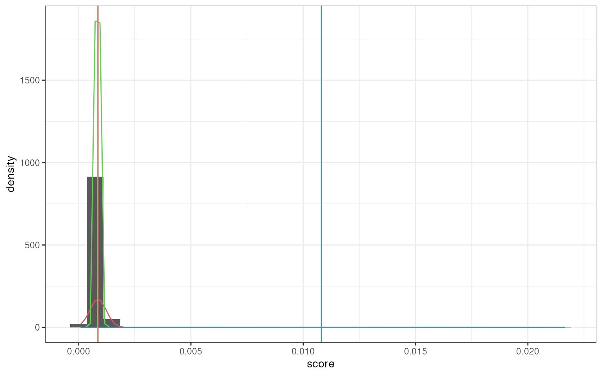
#> number of iterations= 81
#> `stat_bin()` using `bins = 30`. Pick better value `binwidth`.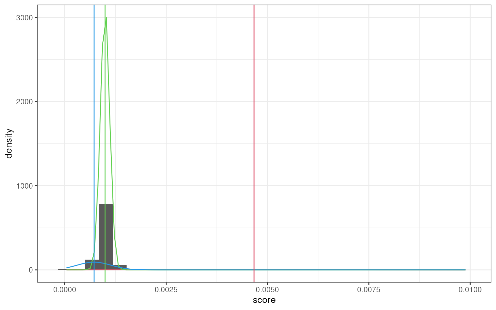
#> number of iterations= 36
#> `stat_bin()` using `bins = 30`. Pick better value `binwidth`.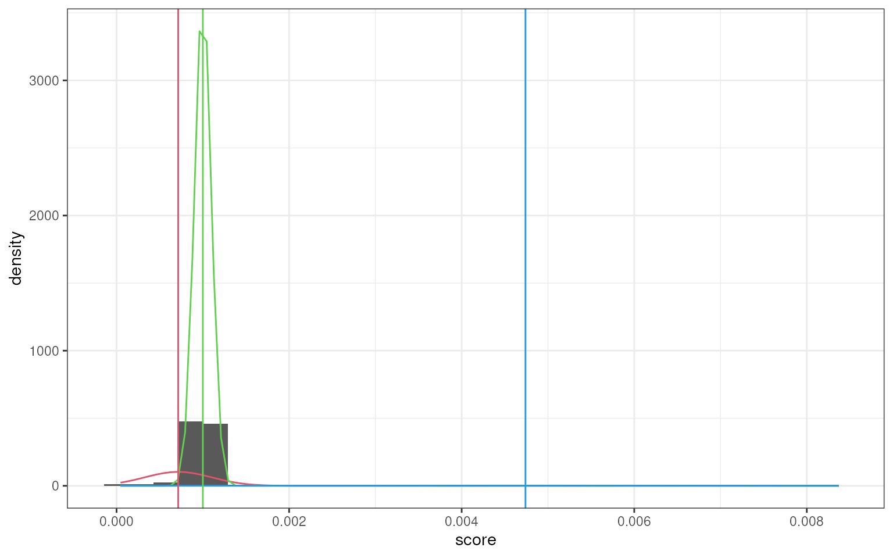
#> number of iterations= 507
#> `stat_bin()` using `bins = 30`. Pick better value `binwidth`.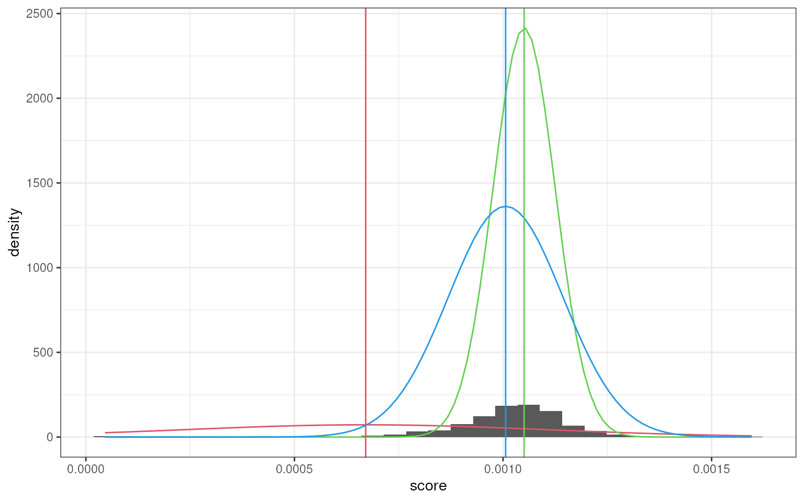
marker_ls
#> $Group1
#> [1] "Gene352" "Gene696" "Gene425" "Gene391" "Gene225" "Gene893" "Gene913"
#> [8] "Gene650" "Gene172" "Gene547" "Gene436" "Gene904" "Gene312" "Gene308"
#>
#> $Group2
#> [1] "Gene419" "Gene332" "Gene141" "Gene37" "Gene682" "Gene778" "Gene818"
#>
#> $Group3
#> [1] "Gene833" "Gene357" "Gene518" "Gene26" "Gene405" "Gene462" "Gene28"
#>
#> $Group4
#> NULLWe can also compare our selected markers with real DEGs. As there is
no markers or DEG in group 4, only show overlap from Group1-3. It’s
clear that all the markers identified by smartid are real
DEGs, with a couple of missing genes in Group 1 and 2. But as what we
showed above, those genes only exhibit low mean expression across all
cells, thus not confident enough to be selected as markers.
library(UpSetR)
upset(fromList(c(slot(data_sim, "metadata")$up_markers, marker_ls)), nsets = 6)
#> Warning: `aes_string()` was deprecated in ggplot2 3.0.0.
#> ℹ Please use tidy evaluation idioms with `aes()`.
#> ℹ See also `vignette("ggplot2-in-packages")` for more information.
#> ℹ The deprecated feature was likely used in the UpSetR package.
#> Please report the issue at <https://github.com/hms-dbmi/UpSetR/issues>.
#> This warning is displayed once per session.
#> Call `lifecycle::last_lifecycle_warnings()` to see where this warning was
#> generated.
#> Warning: Using `size` aesthetic for lines was deprecated in ggplot2 3.4.0.
#> ℹ Please use `linewidth` instead.
#> ℹ The deprecated feature was likely used in the UpSetR package.
#> Please report the issue at <https://github.com/hms-dbmi/UpSetR/issues>.
#> This warning is displayed once per session.
#> Call `lifecycle::last_lifecycle_warnings()` to see where this warning was
#> generated.
#> Warning: The `size` argument of `element_line()` is deprecated as of ggplot2 3.4.0.
#> ℹ Please use the `linewidth` argument instead.
#> ℹ The deprecated feature was likely used in the UpSetR package.
#> Please report the issue at <https://github.com/hms-dbmi/UpSetR/issues>.
#> This warning is displayed once per session.
#> Call `lifecycle::last_lifecycle_warnings()` to see where this warning was
#> generated.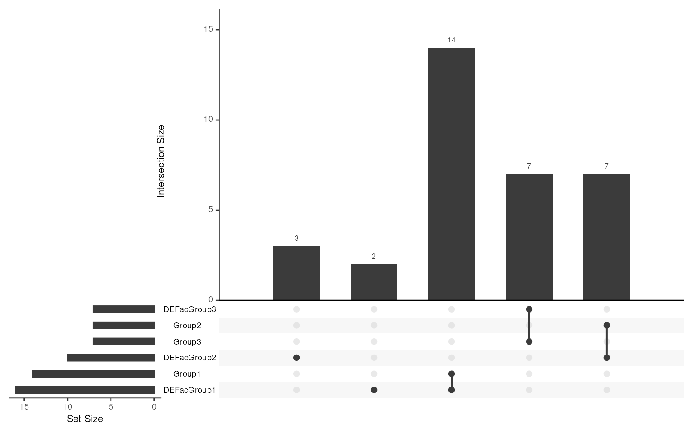
smartid also provides some other implementation of
marker selection. Here is another example using mclust.
Different from markers_mixmdl(),
markers_mclust() doesn’t need a pre-defined number of
components (which is default 3 in markers_mixmdl()),
instead, it will select the number of components by searching a series
of potential numbers. This method is sometimes more robust than
markers_mixmdl() but will also take longer running
time.
Similarly, this method also allows to plot the mixture distribution for each component, but separately.
set.seed(123)
marker_ls_new <- markers_mclust(
top_markers = top_m,
column = ".dot",
method = "max.one",
plot = TRUE
)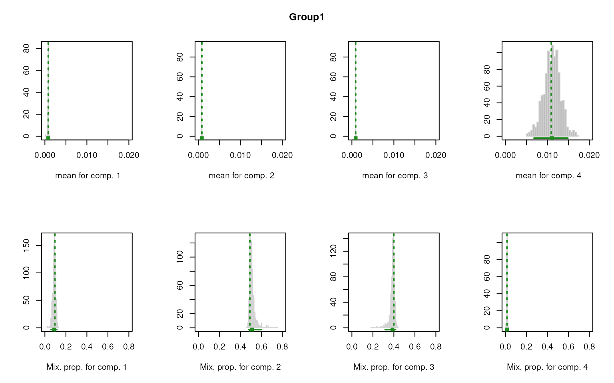
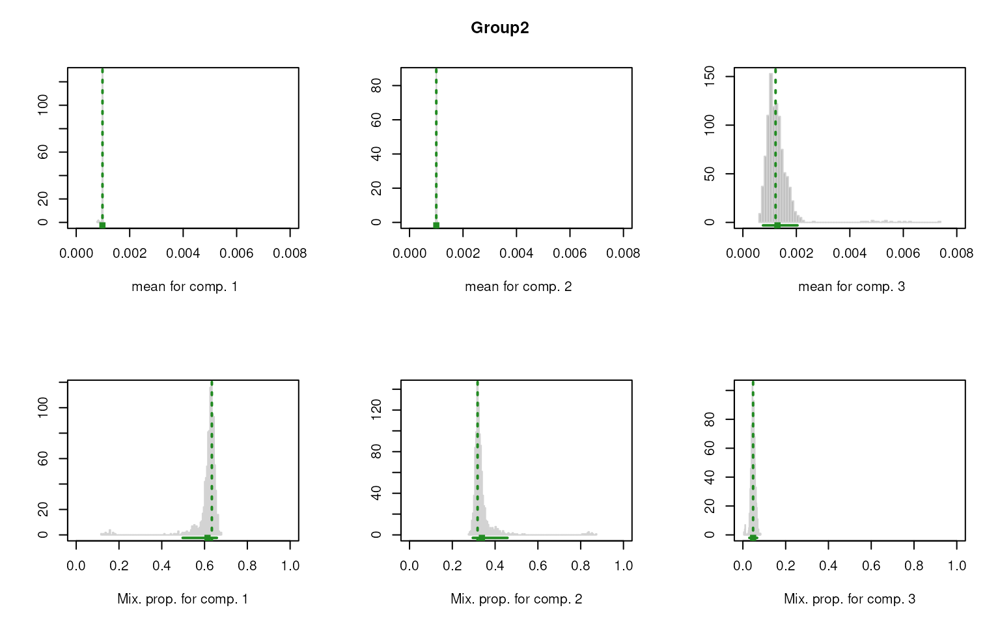
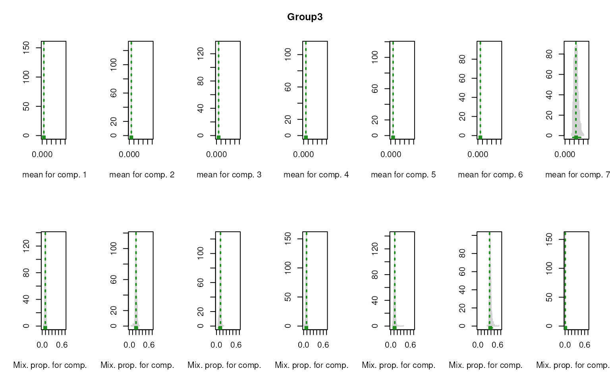
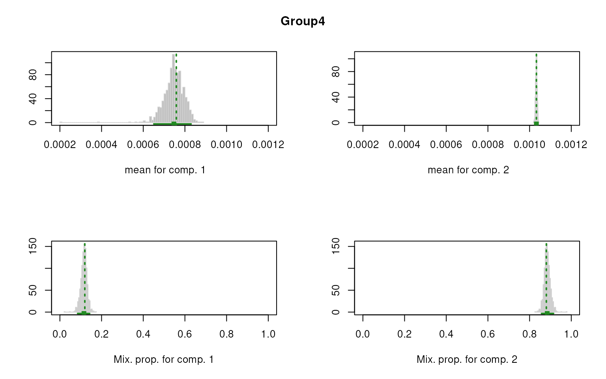
We can compare the marker list with the previous one. The overlap result shows 2 methods can achieve almost the same marker list for each group.
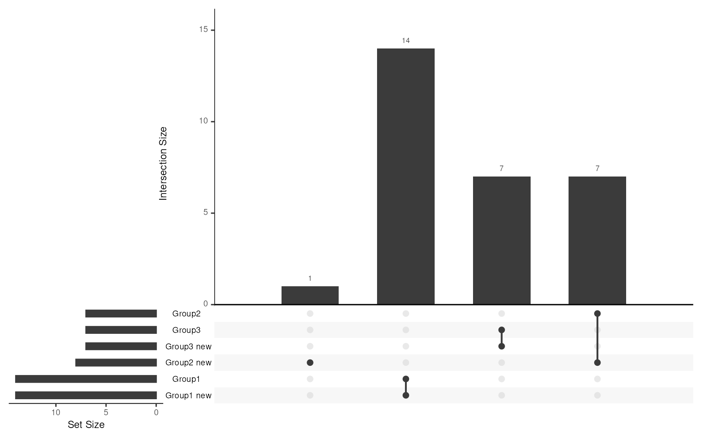
While for the unlabeled data, smartid also provides the
score methods with no need for label information.
Here we choose logTF * IDF_sd * IAE_sd for for gene-set scoring as a use case:
Where IDF and IAE can be termed as:
Similarly, the first step is to score samples/cells using the specified method. This step also starts with raw counts data, without need for data pre-processing, which is quite convenient and fast.
## compute score without label
system.time(
data_sim <- cal_score(
data_sim,
tf = "logtf",
idf = "sd",
iae = "sd",
new.slot = "score_unlabel",
return.intermediate = TRUE
)
)
#> user system elapsed
#> 0.179 0.017 0.196
## new score is saved; tf/idf/iae are updated in metadata because we
## again opted in with return.intermediate = TRUE (default is FALSE).
assays(data_sim)
#> List of length 8
#> names(8): BatchCellMeans BaseCellMeans BCV ... counts score score_unlabel
names(metadata(data_sim))
#> [1] "Params" "up_markers" "tf" "idf" "iae"To compare overall score of the given gene-set, we don’t need to
scale and transform score this time. Using gs_score() can
easily compute the overall score for each cell based on the given
gene-set list.
## compute score for each group marker list
data_sim <- gs_score(
data = data_sim,
features = marker_ls[1:3], # group 4 has no markers
slot = "score_unlabel",
suffix = "score.unlabel" # specify the suffix of names to save
)
## saved score
colnames(colData(data_sim))
#> [1] "Cell" "Batch" "Group"
#> [4] "ExpLibSize" "Group1.score.unlabel" "Group2.score.unlabel"
#> [7] "Group3.score.unlabel"Now we get 3 columns of score for each group markers. We can then visualize the score across groups, see how well it can discern the target group.
It’s evident that the score can sufficiently separate the target group from all others.
as.data.frame(colData(data_sim)) |>
tidyr::pivot_longer("Group1.score.unlabel":"Group3.score.unlabel",
names_to = "group markers",
values_to = "score"
) |>
ggplot(aes(x = Group, y = score, fill = Group)) +
geom_boxplot() +
facet_wrap(~`group markers`, scales = "free") +
theme_bw()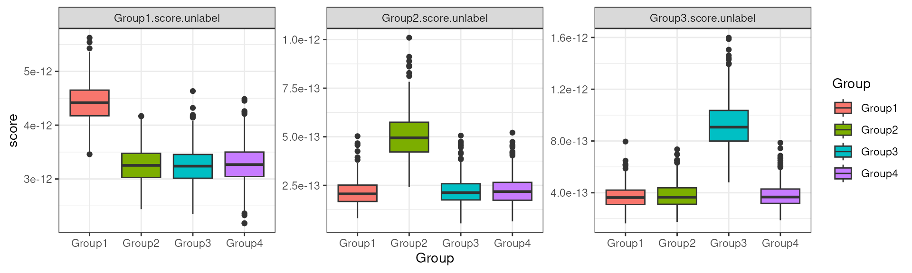
sessionInfo()
#> R version 4.4.2 (2024-10-31)
#> Platform: x86_64-pc-linux-gnu
#> Running under: Ubuntu 24.04.1 LTS
#>
#> Matrix products: default
#> BLAS: /usr/lib/x86_64-linux-gnu/openblas-pthread/libblas.so.3
#> LAPACK: /usr/lib/x86_64-linux-gnu/openblas-pthread/libopenblasp-r0.3.26.so; LAPACK version 3.12.0
#>
#> locale:
#> [1] LC_CTYPE=en_US.UTF-8 LC_NUMERIC=C
#> [3] LC_TIME=en_US.UTF-8 LC_COLLATE=en_US.UTF-8
#> [5] LC_MONETARY=en_US.UTF-8 LC_MESSAGES=en_US.UTF-8
#> [7] LC_PAPER=en_US.UTF-8 LC_NAME=C
#> [9] LC_ADDRESS=C LC_TELEPHONE=C
#> [11] LC_MEASUREMENT=en_US.UTF-8 LC_IDENTIFICATION=C
#>
#> time zone: UTC
#> tzcode source: system (glibc)
#>
#> attached base packages:
#> [1] stats4 stats graphics grDevices utils datasets methods
#> [8] base
#>
#> other attached packages:
#> [1] UpSetR_1.4.1 scater_1.34.1
#> [3] scuttle_1.16.0 ggplot2_4.0.3
#> [5] splatter_1.30.0 SingleCellExperiment_1.28.1
#> [7] SummarizedExperiment_1.36.0 Biobase_2.66.0
#> [9] GenomicRanges_1.58.0 GenomeInfoDb_1.42.3
#> [11] IRanges_2.40.1 S4Vectors_0.44.0
#> [13] BiocGenerics_0.52.0 MatrixGenerics_1.18.1
#> [15] matrixStats_1.5.0 smartid_1.9.2
#> [17] BiocStyle_2.34.0
#>
#> loaded via a namespace (and not attached):
#> [1] gridExtra_2.3.1 rlang_1.3.0 magrittr_2.0.5
#> [4] tidytext_0.4.3 otel_0.2.0 compiler_4.4.2
#> [7] systemfonts_1.3.2 vctrs_0.7.3 pkgconfig_2.0.3
#> [10] crayon_1.5.3 fastmap_1.2.0 backports_1.5.1
#> [13] XVector_0.46.0 labeling_0.4.3 utf8_1.2.6
#> [16] rmarkdown_2.31 UCSC.utils_1.2.0 ggbeeswarm_0.7.3
#> [19] ragg_1.5.2 purrr_1.2.2 xfun_0.60
#> [22] zlibbioc_1.52.0 cachem_1.1.0 beachmat_2.22.0
#> [25] jsonlite_2.0.0 SnowballC_0.7.1 DelayedArray_0.32.0
#> [28] BiocParallel_1.40.2 broom_1.0.13 irlba_2.3.7
#> [31] parallel_4.4.2 R6_2.6.1 bslib_0.12.0
#> [34] stringi_1.8.9 RColorBrewer_1.1-3 car_3.1-5
#> [37] jquerylib_0.1.4 Rcpp_1.1.2 bookdown_0.47
#> [40] knitr_1.51 mixtools_2.0.0.1 splines_4.4.2
#> [43] Matrix_1.7-6 tidyselect_1.2.1 abind_1.4-8
#> [46] yaml_2.3.12 viridis_0.6.5 codetools_0.2-20
#> [49] plyr_1.8.9 lattice_0.23-1 tibble_3.3.1
#> [52] withr_3.0.3 S7_0.2.2 evaluate_1.0.5
#> [55] survival_3.8-9 desc_1.4.3 mclust_6.1.3
#> [58] kernlab_0.9-33 pillar_1.11.1 BiocManager_1.30.27
#> [61] ggpubr_1.0.0 carData_3.0-6 janeaustenr_1.0.0
#> [64] checkmate_2.3.4 plotly_4.12.1 generics_0.1.4
#> [67] sparseMatrixStats_1.18.0 scales_1.4.0 glue_1.8.1
#> [70] tools_4.4.2 data.table_1.18.4 BiocNeighbors_2.0.1
#> [73] tokenizers_0.3.0 ScaledMatrix_1.14.0 locfit_1.5-9.12
#> [76] ggsignif_0.6.4 fs_2.1.0 grid_4.4.2
#> [79] tidyr_1.3.2 nlme_3.1-170 GenomeInfoDbData_1.2.13
#> [82] beeswarm_0.4.0 BiocSingular_1.22.0 vipor_0.4.7
#> [85] Formula_1.2-6 cli_3.6.6 rsvd_1.0.5
#> [88] textshaping_1.0.5 segmented_2.2-1 S4Arrays_1.6.0
#> [91] viridisLite_0.4.3 dplyr_1.2.1 gtable_0.3.6
#> [94] rstatix_1.1.0 sass_0.4.10 digest_0.6.39
#> [97] SparseArray_1.6.2 ggrepel_0.9.8 htmlwidgets_1.6.4
#> [100] farver_2.1.2 htmltools_0.5.9 pkgdown_2.2.1
#> [103] lifecycle_1.0.5 httr_1.4.8 MASS_7.3-66